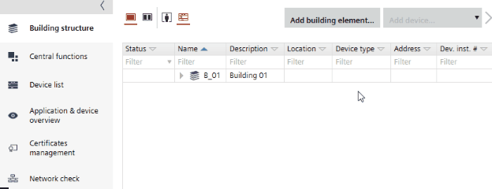

Defining a building structure
The building structure organizes individual rooms in a logical manner or by location according to the building project. The building structure is used to create a unique designation of all elements (object names).
The building structure is created using the following structure elements: building and building element.
- The automatically generated names are defined in Settings > Naming defaults.
Naming defaults - Rooms and devices can be dragged and dropped from the Unplaced rooms or Unplaced devices folders to add them to the building structure.
Moving devices

Add a building
- Right-click the work area and select Add building.
- A new building is added below.
- In the Details pane, enter the Name, Description and network ranges.
Add a building element
- Right-click a building or building element and select Add building element.
- Select the type of building element you want to add.
- A new building element is added below.
- In the Details pane, enter the Name, Description and network ranges.
Add several building elements
- Select a building or building element.
- In the toolbar, click the Add building element arrow.
- Select the type of building element you want to add.
- In the Count field, enter the number of building elements you want to add.
- Click OK.
- The defined number of new building elements is added below.
- In the Details pane, enter the Name, Description and network ranges.
A maximum number of 100 building elements can be added at a time.
Copy a building structure
- Select a building structure or a part of it.
- Press CTRL and drag and drop the building structure or a part of it to another building element.
- The selected building structure is copied. Areas or automation stations contained in the building element are not copied with the building structure.
You can also drag and drop between split views.
Duplicate a building structure
There are two ways to duplicate a building structure:
- Right-click a building structure or a part of it.
- Select Duplicate structure.
OR
- Select a building structure or a part of it.
- Press CTRL and drag and drop the building structure or a part of it to another building element.
- The selected building structure with its floors is copied and is visible below the other buildings. Areas or automation stations contained in the building element are not copied with the building structure.
You can also drag and drop between split views.
Rename a building or building element
- Click the corresponding field.
- Press F2.
Alternatively, slowly double-click in the Name or Description fields to edit the designation.
Delete a building or building element
- Right-click the building or building element to be deleted and select Delete.
- If the building or building element is empty, the elements are deleted.
- If the building or building element contains automation stations or rooms, a message is displayed.
- Select either Delete or Remove.
- The automation station is either deleted from the project (Delete) or moved to the Unused devices folder (Remove).